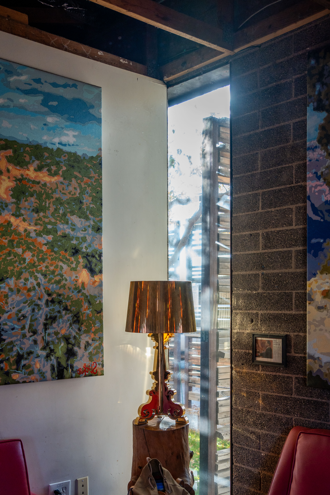
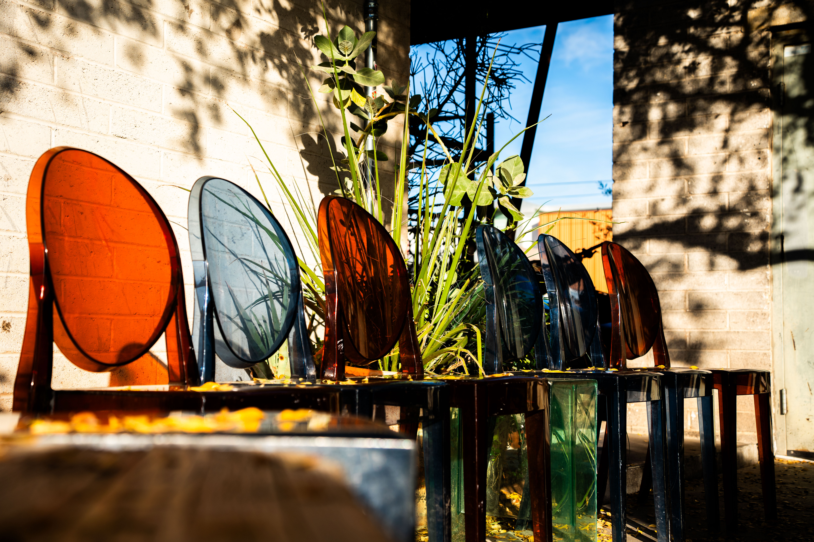

Lux Central
-

-

-

-

- 
-

- 
-

Hours
Every day: 6a-10p
Address
4402 N Central Ave, Phoenix, AZ 85012
Phone
1-602-327-1396
Description
Lux is an alternative coffee shop and bar specializing in food, coffee, and light alcohol selections like wines and beers. The atmosphere is a new age, catering to young professionals and queer culture.
Many regulars participate in business meetings or friendly meetups. It’s a hotspot to come to study or work on a laptop.
The Wi-Fi works well and doesn’t even have a password, offering stable internet access. There are charging plugs littered throughout the cafe. The seating is vibrant and unique, with low-lighting and modern-looking features and architecture and wall art.
There's a choice between couches, bar stools, and desks to work at. Lux also offers a lot of food and coffee options for everyone, and their baristas are inviting and calm.
This cafe is kind of hidden; it doesn't have a strong outdoor appearance, and the entrance may be hard to find.
- Coffee:
- There are lots of drink options, and they always taste good. Not too sweet, not too bland, and not too jittery after.
- Food:
- Lux offers different food menus for different parts of the day. They have a wide selection constantly changing, and it can be confusing and frustrating if you get there too late for a specific menu.
- Wifi:
- There's no wifi password, and the connection is consistent and strong.
- Seating:
- There are awesome seats if you're able to find one. The cafe is very small, and since it's a busy shop, it can difficult to find a spot to sit. There is outdoor seating, but there aren't a lot of tables or desks where laptop work can be done. It may also be uncomfortable to sit outside on a hot day, as there's not a lot of shade in the outdoor section either.
- Atmosphere & Aesthetic:
- This cafe has a business-casual atmosphere. The vibe is very inviting and calm, yet focused.
- Parking:
- There is a small parking lot, it’s great if you can actually find a place to park, but if you can't, it becomes very difficult to find somewhere to park where you won't be towed.
- Bathroom:
- Lux has a single stall bathroom with lots of privacy. The restroom is clean and has traditional dive bar decorations and stickers.
- Music:
- The music is at a decent volume, a little on the louder side, but not enough to make it uncomfortable. They usually play indie, pop, and alternative music.
- Creativity:
- I think the owners of this cafe did a spectacular job decorating. The entire place feels very new-age and modern, and that vibe is especially present in the seating, where there are neon couches, next to funky lamps and lighting fixtures.
- Open Late:
- Yes
- Order Online:
- Yes
- Charging Available:
- Yes